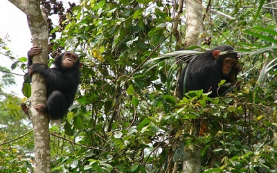

The national Park of Lobéké

It is a national park of southeastern Cameroon within the Moloundou Arrondissement of East Province. Located in the Congo Basin, it is bounded on the east
by the Sangha River which serves as Cameroon's international border with Central African Republic and the Republic of the Congo. It is adjacent to two other
reserves in the CAR (Central African Republic) and Congo.
The park covers 1,838.55 km2 (709.87 sq mi), and its altitude ranges from 300 m (980 ft) to 750 m (2,460 ft) above sea level. More than twelve natural savannas,
characterized as saline swamps, occur within the park. There are also sandbars on the Sangha. The annual rainfall averages 1400 mm., with the dry season occurring from December through February.
Large forest clearings, or bais, have soils rich in various minerals that attract the mega fauna of the forest.
To the northwest is Boumba Bek National Park, another national park in Cameroon's East Province.
Lobéké is predominantly a semi-evergreen forest, most of which has never been logged. The forest is characterized by an enormous variety of plants.
There are more than 300 species of trees in Lobéké.
There are over 150 Species of Mammals. In addition to mammals, fauna inventory includes 215 species of butterflies, 134 species of fish, 18 species of reptiles, and 16 species of amphibians.
The Dja Faunal resreve

It is located on the Dja River in the Central-Southern and Eastern Provinces of Cameroon, 243 kilometers (km) south-east of Yaoundé, and 5 km west of Lomie.
The river almost completely encircles the reserve, forming its natural boundary, except to the south-west. 2° 49'-3° 23'N, 12° 25'-13° 35'E.
Except in the south-east of the reserve, the relief is fairly flat and consists of a succession of round-topped hills. A major fault line on the southern
edge of the reserve, which is followed by the Dja River, has lead to the formation of rather deeper cut valleys on the south eastern edge of the plateau.
The reserve is, in fact, virtually encircled by the Dja River, which flows west along the long northern boundary of the reserve, and then along the southern
boundary, before flowing southeast as a tributary to the Congo. Cliffs run along the course of the river in the south for some 60 km, and are associated with a
section of the river broken up by rapids and waterfalls. The underlying substratum is formed of crystalline metamorphic rocks of Precambrian origin, part of the
Mbalmayo-Bengbis series. These are principally schists, gneisses and quartzite. The soil is porous red ferralitic [clay], poor in nutrients and fragile.
Equatorial type climate, with two rainfall peaks (May and September), and temperatures similar throughout the year. Mean annual temperature is 23.3° C (recorded at 640 m)
and the mean annual rainfall around 1570 millimeters (mm). August is the coolest month, with a mean monthly minimum of 18° C and maximum of 27° C, and April is the hottest
with mean minimum temperature of 19° C and maximum of 30° C. There is less than 100 mm rainfall during 3 months of the year.
Dja is located in a transition zone between the forests of southern Nigeria and south-west Cameroon and the forests of the Congo Basin, and it seems likely that the forests
of the region are essentially undisturbed. The vegetation mainly comprises dense evergreen Congo rain forest with a main canopy at 30-40 m rising to 60 m. Some 43 species of
tree form the canopy, with legumes being particulary common. Furtermore, Dja has over 50 Species of animals and 80 Species of Birds.
Mount Cameroun
Mount Cameroon is an active volcano in Cameroon near the Gulf of Guinea. Mount Cameroon is also known as Cameroon Mountain or Fako (the name of the higher of its two peaks) or by its native name Mongo ma Ndemi ("Mountain of Greatness"). It is the highest point in sub-Saharan western and central Africa, the fourth most prominent peak in Africa and the 31st most prominent in the world.
The mountain is part of the area of volcanic activity known as the Cameroon Volcanic Line, which also includes Lake Nyos, the site of a disaster in 1986. The most recent eruption occurred on February 3, 2012.
Mount Cameroon is one of Africa's largest volcanoes, rising to 4,040 metres (13,255 ft) above the coast of west Cameroon. It rises from the coast through tropical rainforest to a bare summit which is cold, windy, and occasionally brushed with snow. The massive steep-sided volcano of dominantly basaltic-to-trachybasaltic composition forms a volcanic horst constructed
above a basement of Precambrian metamorphic rocks covered with Cretaceous
to Quaternary sediments. More than 100 small cinder cones, often fissure-controlled parallel to the long axis of the massive
1,400-cubic-kilometre (336 cu mi) volcano, occur on the flanks and surrounding lowlands.
Kribi Beach
The coastal town of Kribi lies on the Gulf of Guinea, in Océan Department, South Province, at the mouth of the Kienké River. This location, lies approximately 150 kilometres (93 mi), by road, south of Douala, the largest city in Cameroon and the busiest seaport in the country. The coordinates of Kribi are:2° 56' 6.00"N, 9° 54' 36.00"E.
Due to its equatorial position, Kribi sees a short, fairly dry season and a long, very wet season. The hottest month, February, has an average high temperature of 32 C (89.6 F), and an average low of 25 C (77 F). The wettest month, September, sees a whopping 483 mm (19 in) of rain. 27 of the 30 days in September see rain. The dryest month,
December, sees 59 mm (2 in) of rain. The coldest month is August, with an average high of 28 C (82.4 F), and a low of 23 C (73.4 F). Humidity remains high all year, and snow is unheard of.
Kribi is renowned for its popular beach locations in Ngo'e and near the Lobé Waterfalls. Kribi is equally very popular for its roasted fish. Fishermen typically come in from the sea on week-ends and sell fresh fishes that tourists can then buy and have roasted in many restaurants around the beach. The nightlife especially in places in
like Big-BEN is also among some of the exciting things to do in Kribi.
The Korup Park
Korup National Park is in the Southwest Province of Cameroon and extends over 1,260 km2 of mostly undisturbed primary forest. It is reputedly one of Africa’s oldest and richest rainforests in terms of floral and faunal diversity. It is the most accessible rainforest national park in Cameroon with basic lodging infrastructure and a large network of trails open to visitors.
The park is a popular birdwatching destination and famous for primate viewing (including species such as the drill, Preuss's red colobus, red-eared guenon and Nigeria chimpanzee). Researchers from various disciplines have been conducting biological studies in Korup for over three decades, generating a wealth of information on rainforest ecosystems.
Korup has a pseudo-equatorial climate with two seasons instead of four: a pronounced dry season from December to February with average monthly rainfall less than 100 mm and an extended and intense rainy season approximately from May to October. Annual rainfall between 1973 and 1994 measured near southeastern region of the park averaged 5,272 mm (range 4,027–6,368 mm).
The heaviest rainfalls are typically in August (some years exceeding 10,000 mm). Temperature varies little throughout the year with mean monthly maximum temperature in the dry season being 31.8 °C and in the wet season 30.2 °C. The northern sections of the park receive considerably less rainfall (~2500–3000 mm).
Korup National Park is reputedly one of the richest lowland African forests in terms of faunal richness and diversity, especially for birds, reptiles, amphibians and butterflies. The species list of mammals consists of 161 species in 33 families, of which the primate community accounts for 14 species (8 diurnal and 6 nocturnal)
The Bafut Palace
Surrounded by a sacred forest in the heart of northwest Cameroon, the Bafut Palace has been the fulcrum of political power for over 400 years. It embodies Bafut cultural identity and remains a center for religious rites and traditional ceremonies. Over 50 houses are clustered around the site’s spiritual core, Achum Shrine, and are used by the Fon (king), his wives, and the royal court.
This shrine, built of wood and bamboo and covered with thatch, houses a valued devotional object, typically referred to as a fetish, and is an impressive example of traditional religious architecture. Bafut Palace stands at the center of the Bafut community, bearing witness to the power and importance of the Bafut people over the centuries. It remains the site of significant traditional
ceremonies and religious rites and the built heritage of Cameroon, and West Africa more broadly, a heritage imperiled by globalization. Support from the Annenberg Foundation assured the survival of a particularly rich and meaningful piece of world architectural and cultural history.
The Mankon Palace
Mankon is a prominent First Class Fondom or kingdom strategically located at the heart of Bamenda City Council in Mezam Division, North West Region of Cameroon.
Situated about 1000 metres above sea level with an estimated surface area of 315 square kilometres and a population of about 250.000 inhabitants, this fondom is bounded in the North by Bafut, East by Bamendankwe and Nkwen, West by Ngymbu, Meta and Bali and South by Mbatu and Nsongwa fondoms.
Mankon has two main seasons. That is, the dry season that runs from mid October to mid March and the rainy season which then covers the rest of the year. Fresh temperatures of about 21oc on the average mark these seasons.
Mankon is located in the English – speaking region of Cameroon as such, English is the main official language of communication. French as one of the two official languages in the country is also spoken. Pidgin English is the lingua franca and is widely spoken alongside the Mankon dialect.
Adjacent the palace is the Mankon Sacred Forest, the largest and well conserved sacred forest in the region with over 115 identified interesting bird species. It is a seductive destination for ecotourism.
Also of great tourist interest is the Alankie Hentage Site, the old palatial capital of Mankon with amazing tombs and shrines of 7 Fos ( kings ) and a palatial rest house.
Mankon is practicable throughout the year so visiting is therefore all year round. However, just like in other parts of Cameroon, the tourism season in Mnakon ties with dry season. That is, between the months of October to March.